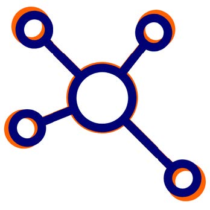
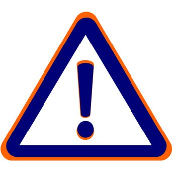

Reliability

- Improve travel time consistency across all modes
- Reduce congestion and bottleneck delays
- Enhance traffic signal coordination
- Ensure continuity of goods movement
Mobility

- Enhance multi-modal options and connections
- Provide traveler information across all modes
- Adapt to emerging technologies and changes in travel trends
Equitable Access
- Improve accessibility across all transportation modes
- Reduce transit service gaps
- Improve first/last mile access
- Improve ease of use across entire network
Safety &
Incident
Management

- Improve inter-agency communication and coordination
- Reduce crashes
- Improve incident response and clearance times
- Promote proactive responder safety initiatives
Environment
- Manage impacts of extreme weather and climate change
- Improve air quality
- Reduce fuel consumption
- Contain pollutants spilled on roads and restore impacted area